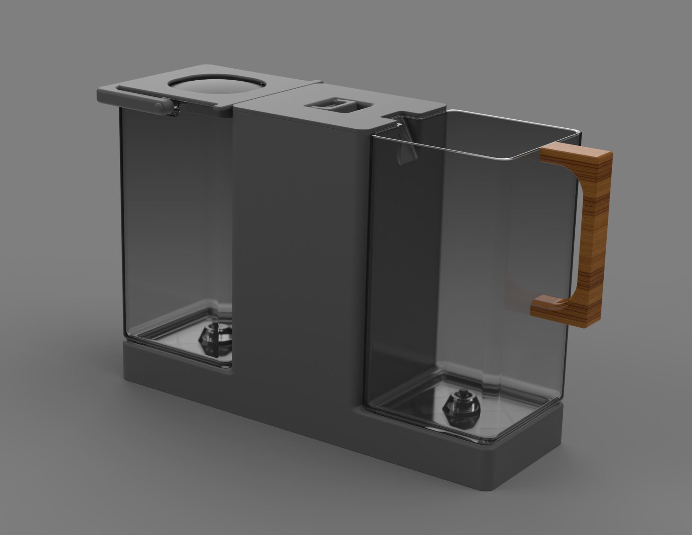
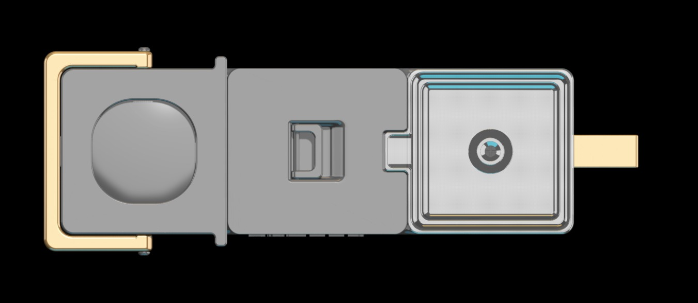
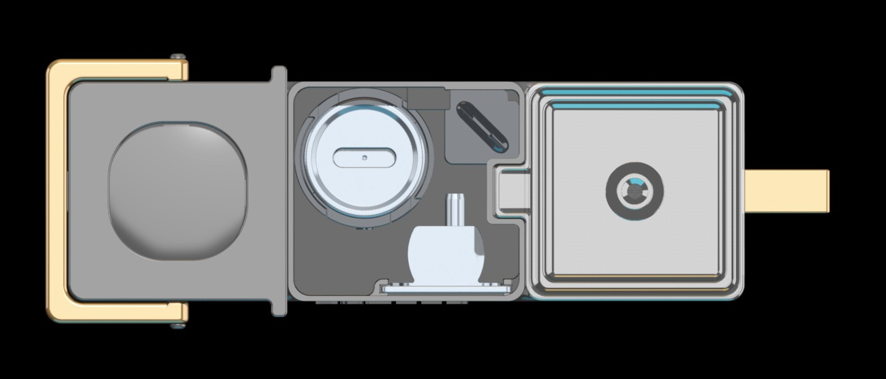
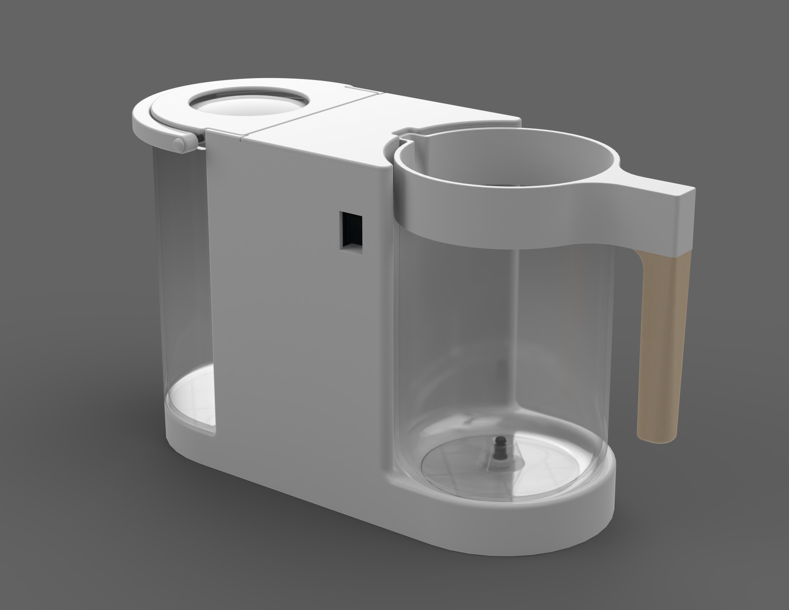
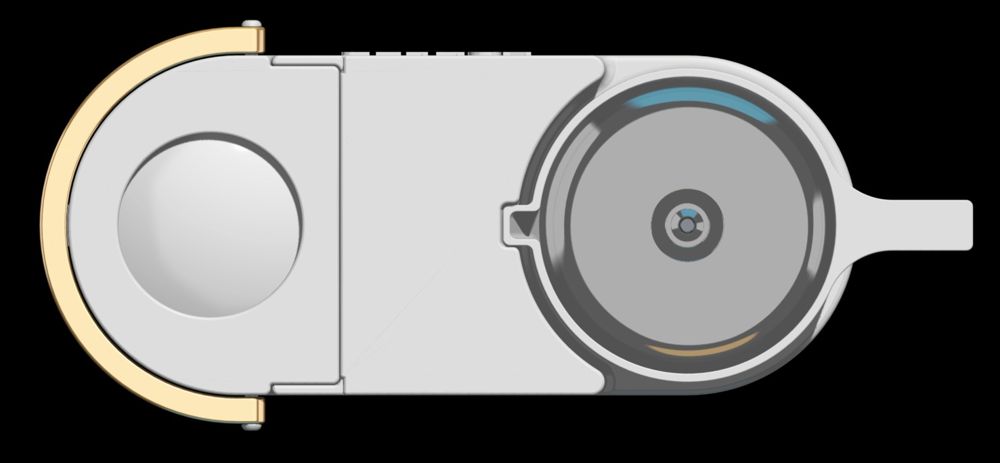
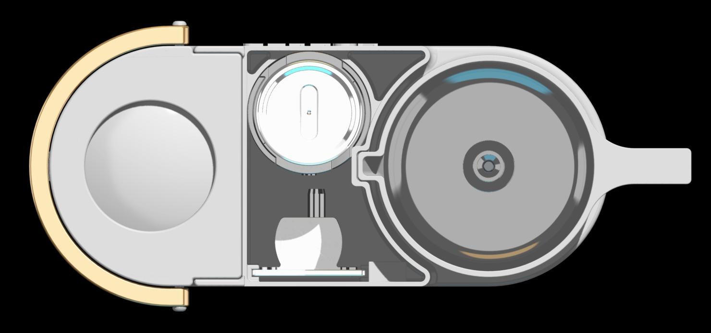

Industrial Design · Product Concept
Kohler Splash
The Splash concept was created to redesign countertop water filtration systems for consumer use. Many current gravity-fed options leave you waiting several minutes and only filter out chlorine and zinc, leaving harmful contaminants such as lead, arsenic, uranium, pharmaceuticals, bacteria, and viruses. By integrating a small pump, the Splash allows for a more robust filtration system while reducing valuable time.
The Splash was iteratively designed into two form factors to test the benefits of both with consumers. The features of each design remain the same.
- 01Two removable pitchers: one dirty, one clean
- 02Fully concealed piping
- 03Central housing for the filtration system
- 04Easy-fill lid on the dirty pitcher
A
Rectangular Concept



B
Rounded Concept


